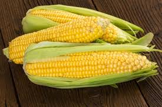

Corn

- Sweet corn is a variety of maize with a high sugar content.Sweet corn is the result of a naturally occurring recessive mutation in the genes which control conversion of sugar to starch inside the endosperm of the corn kernel
- Corn is actually a vegetable, a whole grain, and a fruit. But no matter what form it comes in or what category it falls into, corn is good for you and can be part of a healthy diet. Even plain popcorn can be healthy when prepared without oil, butter, or sa
- Corn is a starchy vegetable and cereal grain that has been eaten all over the world for centuries.
- It’s rich in fiber, vitamins and minerals.
- However, the health benefits of corn are controversial while it contains beneficial nutrients, it can also spike blood sugar levels. In addition, the crop is often genetically modified
- Corn is loaded with plant compounds that are linked to a lower risk of eye diseases. Even more, the fiber in corn may provide a number of health benefits and reduce your risk of diverticular disease.